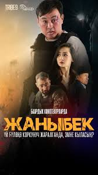

Жаныбек
Жанр:боевик
Режиссёр:Ринат Мурза
В ролях:Бактыбек Нурмат уулу, Алтынай Муканбет кызы и Канат Абдукеримов
Описание:это фильм, описывающий жизнь мужчины, который погружен в рутину и однообразие будней, что приводит к алкогольной зависимости и проблемам в семье. Его отношения с женой ухудшаются, и они находятся на грани развода. В фильме есть момент, когда сестра дарит Жаныбеку материнский кулон, чтобы он передал его своей дочери как семейную реликвию.
Продолжительность:120 мин
Забронировать билет